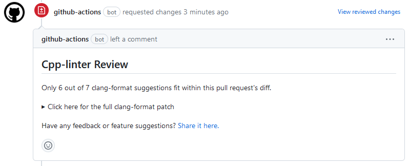
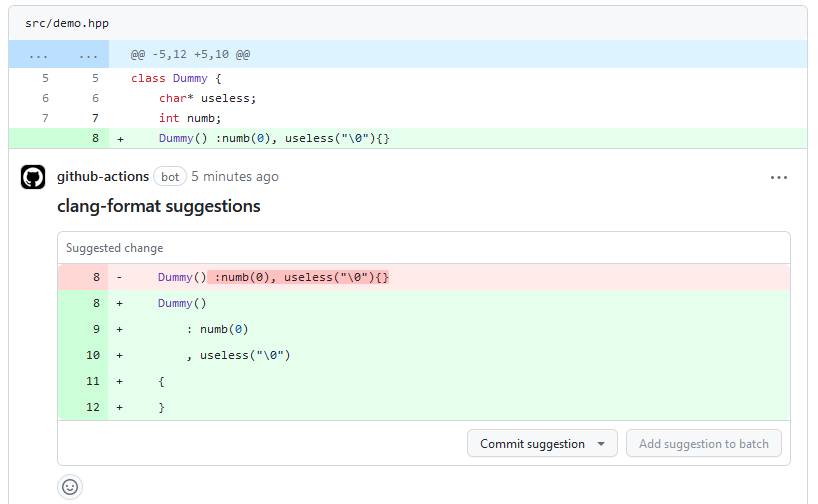

C/C++ Linter Action | clang-format & clang-tidy¶


A Github Action for linting C/C++ code integrating clang-tidy and clang-format
to collect feedback provided in the form of
file-annotations, thread-comments,
workflow step-summary, and Pull Request reviews (with
tidy-review or format-review).
Warning
We only support Linux runners using a Debian based Linux OS (like Ubuntu and many others).
MacOS and Windows runners are supported as well.
What's New¶
v2
- Change action from using docker to composite steps
- improve workflow runs times from 1m 24s (using v1) to 6-20s (for simple workflow runs).
- better support for the database input option (which was broken with the docker environment in v1).
- better support cross-compilation
- better support 3rd party libraries
- Includes many issues and enhancements. See #87 for details.
Refer here for previous versions.
Usage¶
Note
Python 3.10 needs to be installed in the docker image if your workflow is running jobs in a container (see discussion in #185). Our intention is to synchronize with the default python version included with Ubuntu latest LTS releases.
Create a new GitHub Actions workflow in your project, e.g. at .github/workflows/cpp-linter.yml
The content of the file should be in the following format.
steps:
- uses: actions/checkout@v4
- uses: cpp-linter/cpp-linter-action@v2
id: linter
env:
GITHUB_TOKEN: ${{ secrets.GITHUB_TOKEN }}
with:
style: 'file' # Use .clang-format config file
tidy-checks: '' # Use .clang-tidy config file
# only 'update' a single comment in a pull request's thread.
thread-comments: ${{ github.event_name == 'pull_request' && 'update' }}
- name: Fail fast?!
if: steps.linter.outputs.checks-failed > 0
run: exit 1
For all explanations of our available input parameters and output variables, see our Inputs and Outputs document.
See also our example recipes.
Example¶
Annotations¶
Using file-annotations:
clang-format annotations¶

clang-tidy annotations¶

Thread Comment¶
Using thread-comments:
Step Summary¶
Using step-summary:

Pull Request Review¶
Only clang-tidy¶
Using tidy-review:

Only clang-format¶
Using format-review:


Add C/C++ Linter Action badge in README¶
You can show C/C++ Linter Action status with a badge in your repository README
Example
[](https://github.com/cpp-linter/cpp-linter-action/actions/workflows/cpp-linter.yml)

Have question or feedback?¶
To provide feedback (requesting a feature or reporting a bug) please post to issues.
License¶
The scripts and documentation in this project are released under the MIT License